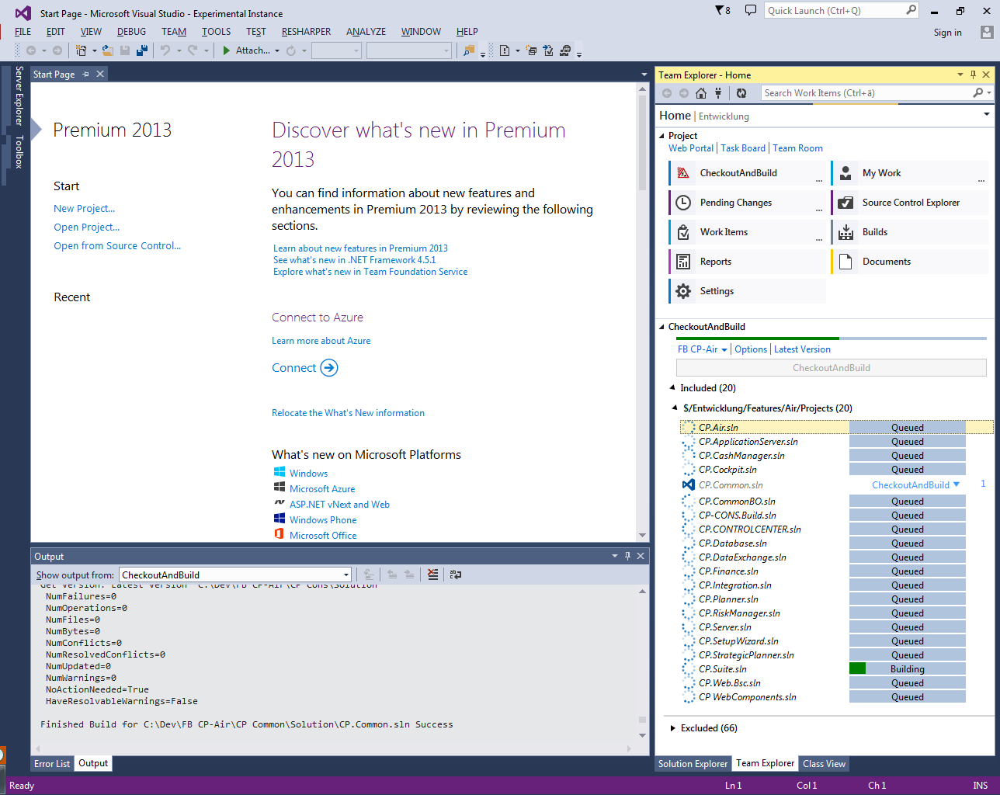

Back from the dead — better than ever
The last CheckoutAndBuild shipped for Visual Studio 2017 as a Team Explorer extension. This is the full comeback: rewritten from the ground up.

The classic (VS 2015–2017)
- IDE-free engine — every step runs out of process (git, msbuild, vstest, nuget), nothing can freeze your IDE
- Git-only and modern — no TFVC baggage, first-class branches, stashes and worktrees
- Everything the classic had — profiles, plugins, per-solution settings, script export, Error List integration
- Plus a lot it never had — worktree manager, multi-repo sync, build ETA, dependency-based build order